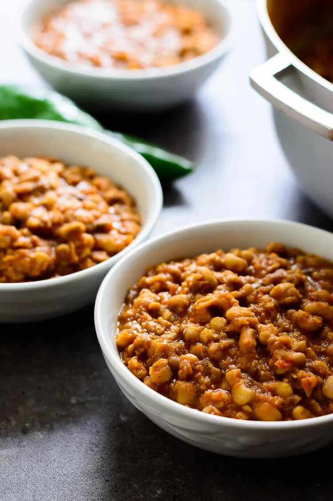

Jellof-Beans Recipe

Description
Jellof Beans holds a dear place in my heart and I think this meal is sweeter than love hehehehe. There are varieties of beans you can use to make this meal, and different methods
preparation but in this tiny article, I will be giving you the ingredients and the method I use to make my own sweet jellof beans.
I guarantee you that after studying this article, you will be able to make your own sweet beans.
Ingredients
- Nigerian Brown Beans
- 1 bulb of onion
- 10 Fresh red pepper
- Half cup of palm oil
- 2 Maggi cube
- Salt
Steps
- Boil water
- Rinse beans and pour into the boiling water
- After about 5 minutes, rinse beans to remove excess protein
- Boil another water
- Pour in the rinsed beans into the boiling water and check continously until the beans is soft
- Chop your bulb of onion and grind the fresh red pepper
- When the beans becomes soft, pour in all your ingredients one by one. The last thing to put in should be the palm oil
- Check continously until it becomes thick
- Serve your sweet jellof beans